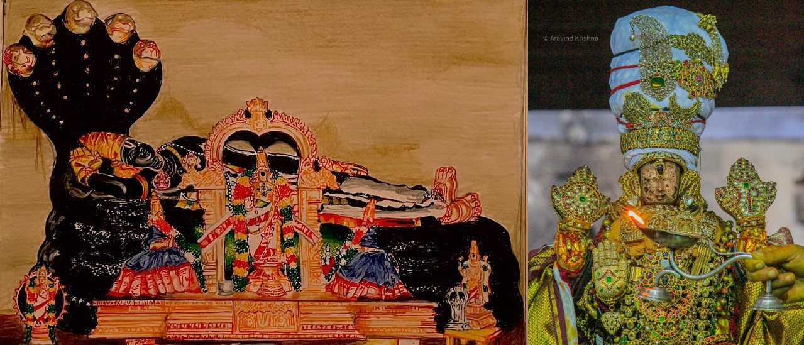

Back to home
Visnu PurAnam Articles
Published on Sri Kanchi Perarulalan Magazine

Periya PerumAl and Sri Kanchi Varadhan (Image source)
I got this fortunate opportunity of writing Visnu PurAnam stories in
Sri Kanchi Perarulalan Tamil monthly. Visnu PurAnam considered as the
"PurAna Ratnam" expounds the Holy Grail of "Purushartam"
(ultimate meaning of life). I am grateful for my Aacharya,
Sri Dr.T.N.Aravamudha Tatachariya Mahadesikan for giving this kainkarya.